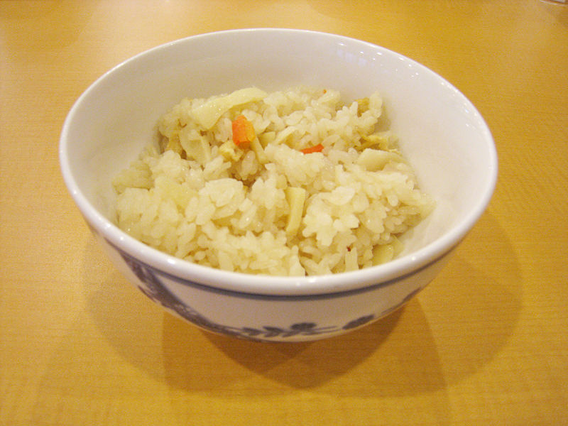

Is a Japanese rice dish seasoned with dashi and soy sauce along with mushrooms, vegetables, meat, or fish. The ingredients of takikomi gohan are cooked with the rice.[1] This dish is consumed by people in Japan around the fall season since many root vegetables and mushrooms are harvested during this season in Japan.[2] Ingredients will vary based on the seasonal vegetables and fish. Since this dish has nutritional value, and uses a small amount of rice with vegetables and proteins, some Japanese people eat it for dieting purposes.[3]
Japan Foods
Enjoy the food you want!
Takikomi gohan (炊き込みご飯, 炊き込み御飯)
